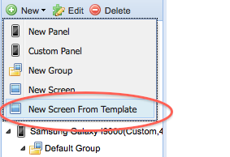

|
This page last changed on Apr 27, 2011 by yannph.
Hi,
I've several UI defined on an iPAD panel. I'd like to have some of the UI displayed in different pages.
Is there a way to share a UI (and so to create/configure only once)?
Is there a way to copy UI from a page and paste it on another page? and to copy on another panel?
Regards
|
None that I know off.
The easiest way to do this is to export the configuration and manually edit the XML file, then re-package the zip file.
This raises 2 requirements:
1. be able to import back a configuration to the modeler, at this stage it is not possible. Looking at the source, I think something like that was started but not sure how far it went (ImportZipWindow ?)
2. be able to define some form of group of UI elements. This can be used in 3 ways:
- simply as a grouping on 1 screen, making it easier to move the whole block
- be included from different screen, achieving the re-use behavior you're describing above
- be used as pop-ups (modal or not)

Posted by ebariaux at Apr 27, 2011 16:54
|
Is there a way to share a UI (and so to create/configure only once)?
To some extent but with a caveat that the implementation was left half-baked and needs to be completed. So whether it works or not at the currently deployed version of the designer is a little iffy. It does work with some basic use cases although the user experience is not the greatest. YMMV.
You can save an existing screen design as a template.
Then you can create a new screen by importing the template.

Posted by juha at May 10, 2011 12:18
|
This raises 2 requirements:
1. be able to import back a configuration to the modeler, at this stage it is not possible. Looking at the source, I think something like that was started but not sure how far it went (ImportZipWindow ?)
Yeah, the main task to accomplish first is to verify and deploy the separation of persistence model (and REST API) from the designer app itself. Once that is complete, an import can be implemented in a more sensible way.
2. be able to define some form of group of UI elements. This can be used in 3 ways:
- simply as a grouping on 1 screen, making it easier to move the whole block
- be included from different screen, achieving the re-use behavior you're describing above
- be used as pop-ups (modal or not)
Yeah. This will be a bit more difficult. I'm struggling a bit with how to do such grouping of visual components in a non-clumsy way. We could default to a drag-select typical of presentation or image drawing utilities but implementing this in the GWT and in a way that does not conflict with the already present drag and drop functionality of a limited browser platform may require lots of tweaking.
I haven't thought of any alternative models of grouping visual elements in a designer yet.
Posted by juha at May 10, 2011 12:25
|
|
Hi Juha,
I've already used this templating for screens. Thank you
but this doesn't answer to my requirements at UI element - widget level.
Thank you for your response and for adding this requirement in the designer wish list 
Yann
Posted by yannph at May 13, 2011 11:27
|
|
{kind=link}
{kind=link}